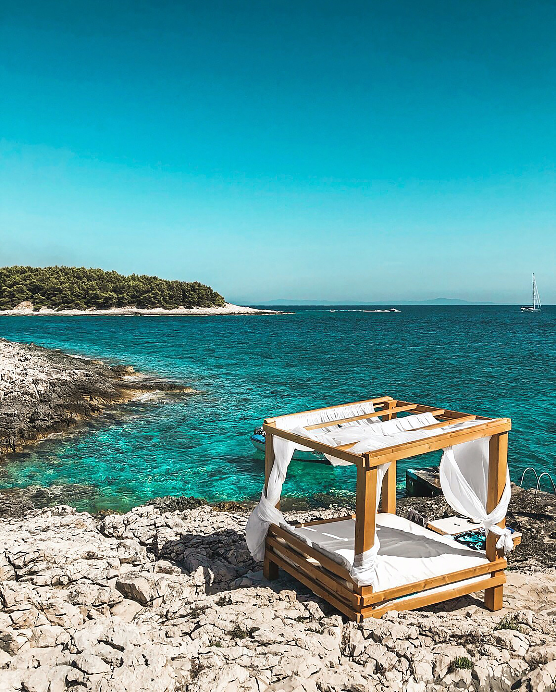
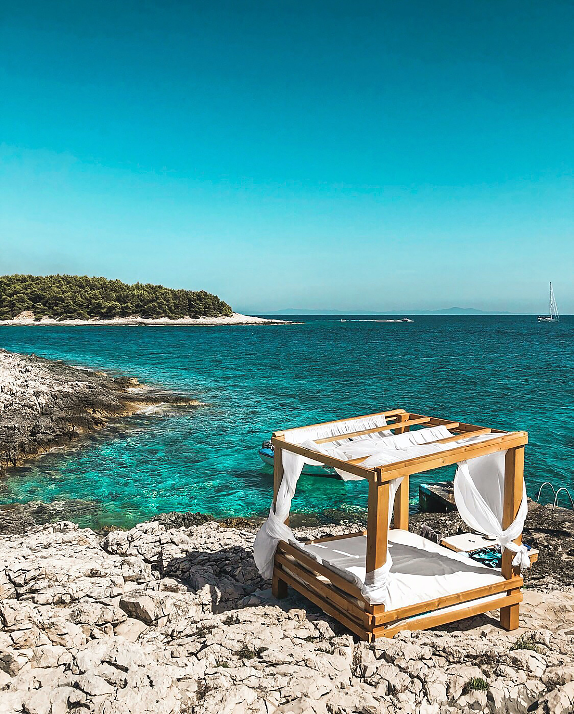

Kroatien ist ein beliebtes Reiseziel. Zagreb ist die größte Stadt Kroatiens und auch die Hauptstadt. Im Sommer ist es sehr warm, aber auch im Winter ist es relativ Mild. Es gibt viele schöne Orte und Sehenswürdigkeiten. Die Sprache die dort gesprochen wird ist Kroatisch. Die Strände sind über wiegend Steinig eher weniger findet man Sandstände. Es lohnt sich auf jedenfall mal nach Kroatien zu fahren.
Weitere Informstionen über das Land, Klima und Kultur findest du in dem unten stehenden Link. Klicke Hier